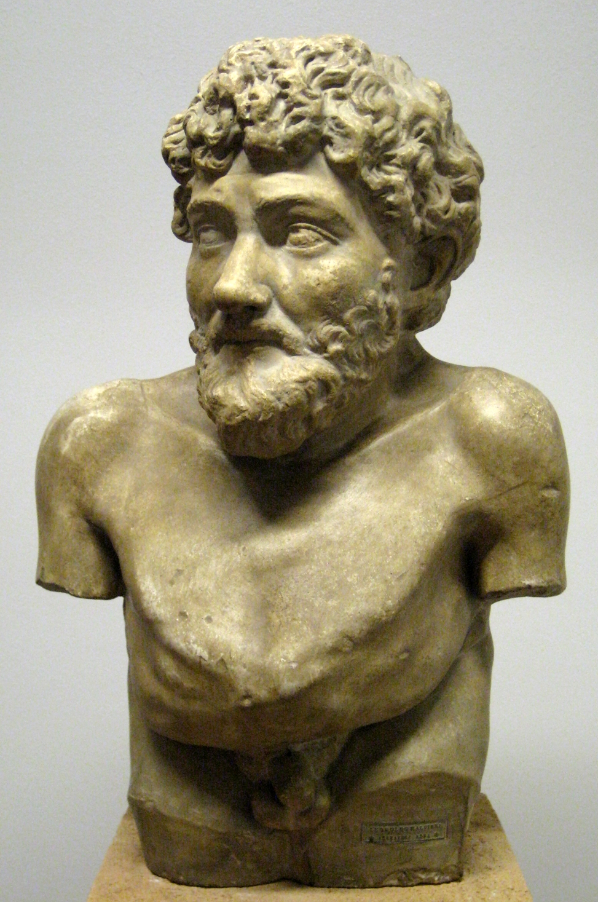

أثر كليلة و دمنة على الأدب العالمي
ظهر تأثير الكتاب واضحاً في عددٍ من القصص الأدبية العالمية، ومن أشهرها:
- خرافات إيسوب

- خرافات ماري الفرنسية

- القصص الخرافية لجان دو لافونتين

- اعتقاد بعض النقاد أن قصص ألف ليلة و ليلة و السندباد مستوحاة من كليلة و دمنة